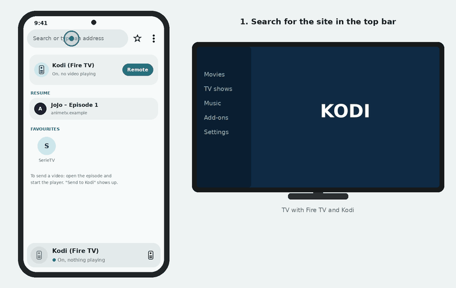

Phone in your hand.
Video on the TV.
Il telefono in mano.
Il video sulla TV.
Open the streaming site on your Android phone, start the player, and Couch Cast sends the video to Kodi on your Fire TV. Free, no ads, no account.
Apri il sito di streaming sul telefono Android, avvia il player e Couch Cast manda il video a Kodi sulla Fire TV. Gratis, senza pubblicità, senza account.
Download the APKScarica l'APKAndroid 13+- no ads
- niente pubblicità
- code on GitHub
- codice su GitHub
- no tracking
- nessun tracciamento
- .m3u8 · .mp4


A drawing of the app, not a recording.
Un disegno dell'app, non una registrazione.